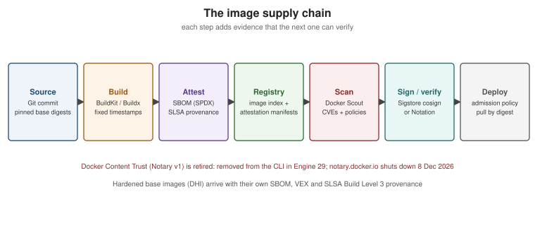

Image Best Practices and Supply-Chain Security
|
This content was generated with the assistance of AI and should be verified against the official documentation before being relied on in production. |
An image is code you run in production, assembled partly from other people’s code. This page collects the practices
that make images small, predictable and safe to ship, and the tools that check them: Docker’s own build best
practices, build checks and hadolint for linting, Docker Scout for vulnerabilities and policies, Docker Hardened
Images as a base, and attestations plus signing for provenance. It targets Docker Engine 29.8.x, Buildx 0.37.x with
BuildKit 0.33.x and the docker/dockerfile:1 frontend. Run-time hardening (capabilities, seccomp, rootless mode)
is on Docker Security.
The building best practices, with reasons
Each row restates a recommendation from Building best practices together with why it matters.
| Practice | How | Why |
|---|---|---|
Choose a minimal, trusted base image |
Docker Official Images, Verified Publishers or Docker Hardened Images; slim or distroless runtime variants |
Fewer packages mean fewer CVEs, smaller pulls and less for an attacker to use |
Pin base image versions |
A specific tag, and a digest where reproducibility matters: |
A moving tag can change your image without a code change; a digest makes builds repeatable (let Dependabot or Renovate bump it) |
Rebuild often |
Scheduled CI builds with |
Base images receive security fixes; a cached |
Use multi-stage builds |
Build in a JDK stage, ship a JRE stage (see Build Cache and Multi-Stage Builds) |
Compilers, sources and caches never reach production |
Exclude with |
Ignore |
Faster builds, and credentials in the working tree cannot leak into a layer |
Create ephemeral containers |
No state in the container; configuration from the environment; data in volumes |
A container can be stopped, destroyed and replaced at any time — the basis of scaling and rolling updates |
Decouple applications |
One concern per container (the database is its own container) |
Independent scaling, upgrades and failure domains |
Don’t install unnecessary packages |
|
Size and attack surface |
Run as a non-root user |
Create a user with a fixed UID and |
A process escaping the container as root is far more dangerous; many platforms refuse root containers |
Keep secrets out of layers |
|
Layers and build history are readable by anyone who can pull the image |
Add a |
Probe a readiness endpoint |
Orchestrators and Compose can wait for and replace unhealthy containers |
Label the image |
|
Tools (GHCR, Scout) link the image back to its code and commit |
Sort multi-line arguments; one package per line |
Alphabetical |
Reviewable diffs, no duplicates |
Secrets at build time
A build that needs a credential — a private Maven repository, an npm token — should mount it for the one step that uses it:
# syntax=docker/dockerfile:1
FROM eclipse-temurin:25-jdk AS build
WORKDIR /src
COPY . .
RUN --mount=type=secret,id=maven-settings,target=/root/.m2/settings.xml,required=true \
--mount=type=cache,target=/root/.m2/repository \
./mvnw -B -ntp package -DskipTestsdocker build --secret id=maven-settings,src=$HOME/.m2/settings.xml -t orders:1.4.0 .
# Environment variables work as a source too (for CI):
docker build --secret id=npm-token,env=NPM_TOKEN -t web:1.0 .Derived from Build secrets. The SecretsUsedInArgOrEnv build
check warns when an ARG or ENV name looks like it holds a credential.
Reproducible builds
Two builds of the same commit should produce the same image digest. Pin base images and packages by digest or
version, and set SOURCE_DATE_EPOCH so timestamps inside layers and the image configuration are fixed:
docker buildx build --build-arg SOURCE_DATE_EPOCH=$(git log -1 --pretty=%ct) \
--output type=image,name=registry.example.com/myorg/orders:1.4.0,push=true,rewrite-timestamp=true .Derived from Reproducible builds and
WORKDIR and SOURCE_DATE_EPOCH.
Using the commit timestamp invalidates the cache from WORKDIR onwards on every commit; that is the documented
trade-off for provenance-grade reproducibility.
Linting: build checks and hadolint
docker build --check . # Docker's own rules, no build performed
docker run --rm -i hadolint/hadolint < Dockerfile # hadolint also lints the shell inside RUN (via ShellCheck)Derived from Checking your build configuration and the
hadolint README. Build checks know about Dockerfile semantics (stage names,
undefined variables, secrets in ARG/ENV); hadolint adds opinions on package pinning and shell scripting.
Running both in CI is cheap.
Scanning with Docker Scout
Docker Scout analyses an image’s SBOM against vulnerability databases and suggests better base images. The
docker scout CLI plugin ships with Docker Desktop and can be installed separately for Docker Engine:
docker scout quickview orders-service:1.4.0 # summary: CVE counts by severity, base image, fixes available
docker scout cves orders-service:1.4.0 # every CVE, with package and fixed version
docker scout cves --only-severity critical,high --exit-code orders-service:1.4.0 # fail CI on critical/high
docker scout recommendations orders-service:1.4.0 # base image tags with fewer vulnerabilities
docker scout compare orders-service:1.4.0 --to orders-service:1.3.0
docker scout sbom orders-service:1.4.0 # the SBOM Scout derivedDerived from Docker Scout quickstart and
docker scout CLI reference. For repositories enrolled in
Scout, policies evaluate every image continuously — no fixable critical or
high CVEs, no AGPL licences, an up-to-date base image, supply-chain attestations present, a non-root default user — and docker scout policy reports compliance. docker/scout-action runs the same checks in GitHub Actions (see
Docker CI/CD with GitHub Actions).
Docker Hardened Images
Docker Hardened Images (DHI) are minimal base images maintained by Docker: runtime
variants are distroless (no shell, no package manager) and run as a non-root user, -dev variants add build
tooling for the build stage, and every image is built to SLSA Build Level 3 with signed SBOMs, VEX statements and
provenance. Images are pulled from dhi.io after docker login dhi.io. The documented Java migration replaces a
Maven/Temurin pair with a DHI -dev Maven image for building and a DHI Temurin runtime image, as shown on
Build Cache and Multi-Stage
Builds; see the Java migration example and the
migration checklist (no shell in the runtime image, a non-root
user, and a writable path only where you mount one).
Choosing a base image
or package manager in production?"} q1 -->|No| q2{"Is a hardened, SLSA-attested
base available for the runtime?"} q2 -->|Yes| dhi["Docker Hardened Image runtime variant"] q2 -->|No| dl["Distroless runtime image"] q1 -->|Yes| q3{"Native libraries that need glibc?"} q3 -->|Yes| slim["Debian slim or Ubuntu based
e.g. eclipse-temurin:25-jre"] q3 -->|No| q4{"Is image size the main constraint?"} q4 -->|Yes| alp["Alpine variant (musl)"] q4 -->|No| slim dhi --> pin["Pin tag and digest, rebuild on base updates,
scan with Docker Scout"] dl --> pin slim --> pin alp --> pin
Provenance and signing
The image supply chain has more links than the Dockerfile:

-
Attestations:
docker buildx build --sbom=true --provenance=mode=maxattaches an SBOM and SLSA provenance to the image index (see BuildKit and Buildx). GitHub Actions can also produce signed provenance with its own attestation actions. -
Signing: sign the image digest with Sigstore Cosign (keyless in CI, using the workflow’s OIDC identity) or with Notation, and verify signatures at deploy time with an admission controller or policy engine.
-
Frameworks: SLSA defines the levels of build integrity these artifacts attest to.
-
AI workloads: images that bundle model weights, Python packages or MCP servers extend the same chain; see AI Supply Chain Security.
# Keyless signing and verification with Sigstore cosign, by digest
cosign sign ghcr.io/myorg/orders@sha256:<digest>
cosign verify ghcr.io/myorg/orders@sha256:<digest> \
--certificate-identity-regexp 'https://github.com/myorg/orders/.+' \
--certificate-oidc-issuer https://token.actions.githubusercontent.comDerived from the Sigstore cosign documentation.
Docker Content Trust is historical. Learning Docker (chapter 11) describes signing tags with
DOCKER_CONTENT_TRUST=1 and Notary v1. Docker Engine 29 removed Content Trust from the CLI, and the Notary v1
service at notary.docker.io shuts down on 8 December 2026; Docker points users to Sigstore/Cosign and Notation
instead (see Retired features and the
Engine 29 release notes).